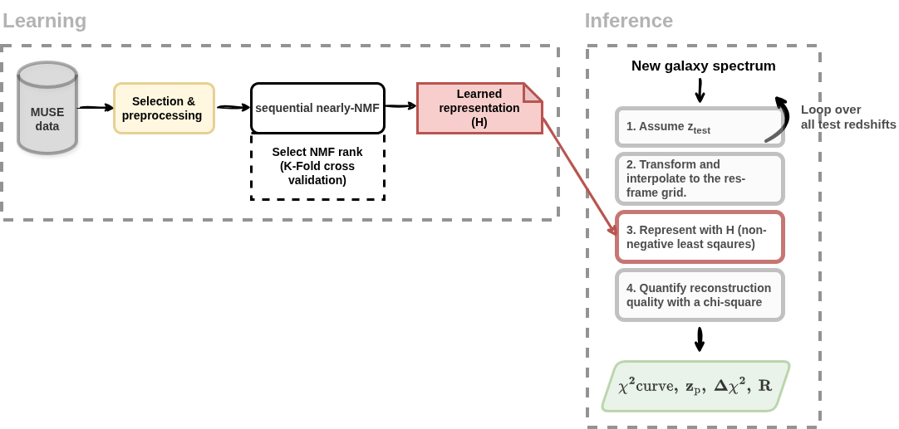

Moose.jl Documentation
Welcome to the documentation for Moose.jl!
Installation
Moose.jl can be installed by running
julia> using Pkg
julia> Pkg.add(Pkg.add(url="https://github.com/masten-bourahma/Moose.jl", rev="dev")Overview
Moose.jl is a Julia package for accurate and automated galaxy redshift estimation from spectroscopic data. The package was developed in the context of a PhD thesis focused on building robust redshift prediction and source detection tools for hyperspectral observations acquired with the Multi-Unit Spectroscopic Explorer (MUSE) instrument [1] at the Very Large Telescope (VLT).
Moose.jl is designed to operate efficiently on large spectral datasets and to integrate seamlessly with modern Julia-based data analysis workflows.
Working principles
Internally, Moose.jl relies on a learned low-rank rest-frame representation of galaxy spectra observed with MUSE. This representation is learned via Non-negative Matrix Factorization (NMF) applied to a training set of approximately 7,000 galaxy spectra with known redshifts. The learned representation consists of 10 non-negative basis vectors in the rest frame, capturing the stellar continuum, emission and absorption spectral features of the galaxy population.
For redshift inference on new (test) spectra, Moose.jl projects each spectrum onto the learned basis across a grid of trial redshifts. The redshift grid spans a user-defined range (typically 0 ≤ z ≤ 6.7) with a spacing chosen by the user. At each trial redshift, Moose.jl performs a non-negative least-squares reconstruction and evaluates the corresponding χ² metric between the observed and reconstructed spectra.
This procedure produces a χ² curve (error as a function of redshift), from which the global minimum is selected as the predicted redshift. Futhermore, Moose.jl computes a significance and robustness scores in order to quantify the confidence of the prediction.
For a detailed methodological description and validation, we refer the reader to the accompanying paper [to be linked]. A chart that summarizes Moose.jl's workflow is shown below

Main features
This package provides the following features:
- An implementation of the nearly-NMF algorithm [2]
- An implementation of the Fast Non-Negative Least Squares (FNNLS) [3]
- An implementation of a multi-threaded FNNLS
- Code for redshift predictions on fits files / datacubes
- Code for spectral debelending (under construction)
Acknowledgement
The development of this package was supervised by Nicolas BOUCHE, Roland BACON
References
[1]: Bacon Roland et al., The MUSE second-generation VLT instrument, 2010. https://arxiv.org/pdf/2211.16795
[2]: Dylan Green and Stephen Bailey, Algorithms for Non-Negative Matrix Factorization on Noisy Data With Negative Values, 2024. https://arxiv.org/abs/2311.04855
[3]: https://three-mode.leidenuniv.nl/pdf/b/brodejong1997jc.pdf